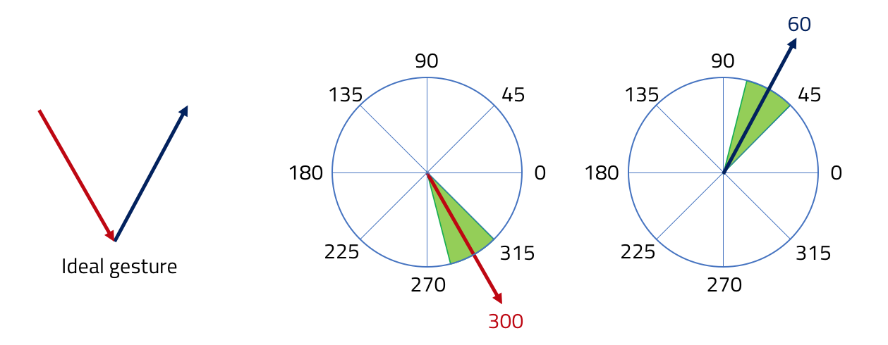
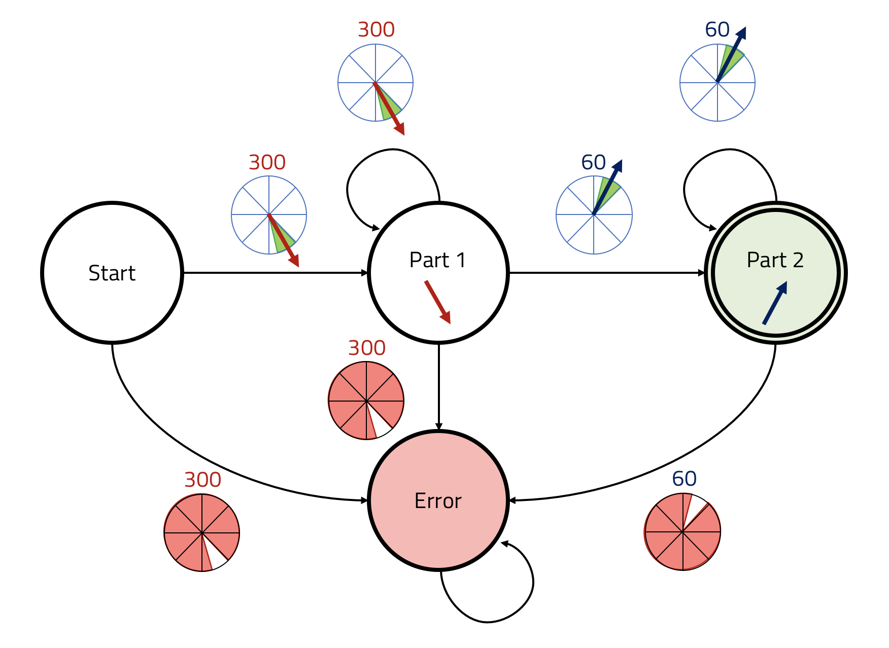

Recognizing Gestures with Finite State Machines
In this test, we consider gesture recognition with the Finite State Machines (FSM) as a sample heuristic approach. They are quite used in gesture interface programming, for instance in iOS.
We provide a simplified API for building FSMs able to recognize linear stroke gestures. The heuristic consists of a simple angle check, considering the previous and the current stroke point. At each update, the FSM checks if the movement direction angle defined by the two points is contained in a specified range. If so, the recognition continues. Otherwise, the stroke is rejected.
For instance, consider the ideal trajectory of the V gesture in the figure below. In the first part (in red),
the user moves along the 300 degrees direction. The movement angle is depicted in the first circle.
However, maintaining the direction precisely is impossible for a user. So, we can create a 30-degrees tolerance range
around the ideal direction, which corresponds to the green sector (minimum 285, maximum 315).
In a similar way, we can build a tolerance range around the direction for the second part
(in blue, minimum 45, maximum 75 degrees). Such ranges can be found empirically by trial and error.

The recognition state machine for a V gesture is depicted in the following figure. At the beginning the FSM is in the
Start state. If the user follows correctly the 300 degrees direction, it fires the transition to the Part 1 state.
Otherwise it fires the transition to the Error state and the recognition ends.
In the correct case, the FSM remains in the Part 1 state util either the user misses the direction (Error state) or
the stroke starts moving along the 60 degrees direction. In the latter case, the FMS fires the transition towards Part 2.
Other following movements in the 60 degrees direction maintain the FMS in this state. Again, moving outside the direction
will fire a transition towards the Error state.
If the user ends the stroke while the FSM is in Part 2 state, the gesture is recognized.

Defining a FSM
The Input.AngleFSM class simplifies the creation of stroke recognition FSMs.
In the initialization step, it accepts a configuration object
defining the angle range for each state (the min and max properties).
The tolerance parameter defines how many consecutive samples outside the current state range are needed for firing
the transition towards the error state. Symmetrically, it defines also how many consecutive samples in the range of
the next state are needed for firing the transition.
It allows having a recognizer that is more robust to the input noise, but it delays the transitions.
For creating a good interface, we need to find a good balance between the two aspects.
var angleFSM = Input.AngleFSM();
var midRange = 15;
var tolerance = 5;
angleFSM.init([
{min: 300 - midRange, max: 300 + midRange},
{min: 60 - midRange, max: 60 + midRange}
], tolerance);Firing transitions and inspecting the current state
The current state of a Input.AngleFSM can be accessed through its state member. A non-negative value
is the index of the range entry in the states member (the array passed in the init method).
For instance, in the FSM for the V gesture, a state === 0 corresponds to the red arrow, corresponding to first entry
in the states array. If state < 0, the FSM is in the Error state.
// tests if the FSM is in the error state
if(angleFSM.state < 0){
// error
}
// checks if a gesture has been recognized
if(angleFSM.state === angleFSM.states.length - 1){
// gesture recognized
}In order to receive an update, the FSM requires two Input.Point2D instances: the current and the previous
stroke position. The update is fired calling the push method, which modifies the state variable if needed.
We receive the stroke position from a {@ Input.StrokeInput} object.
var scene = new Grid.Scene();
scene.init();
var input = new Input.StrokeInput(scene.layer);
input.onStrokeChange.add(function (event) {
// get the current and the previous stroke position
var current = event.d;
var previous = event.d.buffer[event.d.buffer.length - 2];
// update the FSM
angleFSM.push(current, previous);
// ... do something inspecting the FSM
});The same Input.AngleFSM can be reused for recognizing more than one stroke. Calling the restart method
resets the current FSM state to Start. Usually, we reset the FSM when the stroke starts.
input.onStrokeBegin.add(function(event){
angleFSM.restart();
});